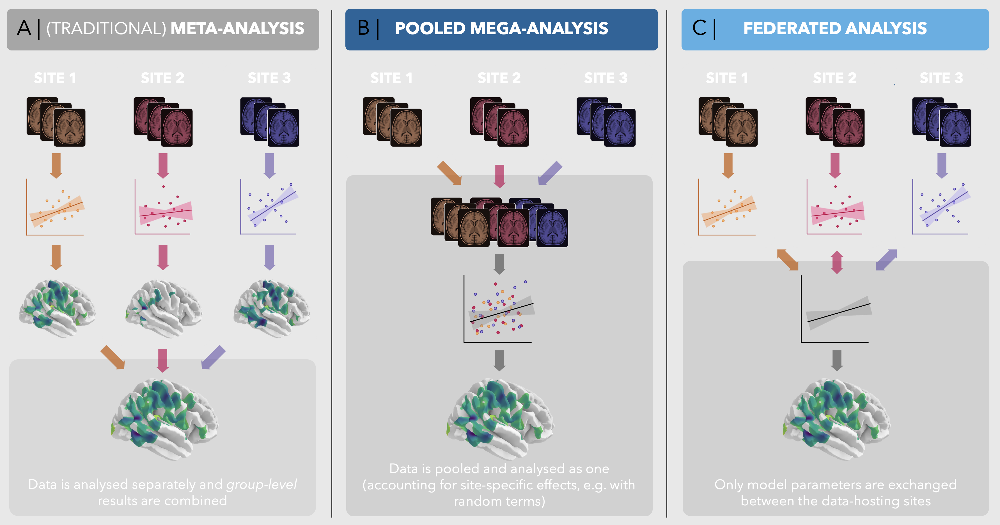

Running vertex-wise federated analyses and meta-analyses
Serena Defina
2026-04-30
Source:vignettes/articles/06-run-vw-meta-and-fed.Rmd
06-run-vw-meta-and-fed.RmdQuite commonly, the data we want to analyze is annoyingly scattered around. For example, multiple sites/hospitals collect sensitive individual-level data that cannot be shared publicly due to privacy concerns.
We generally strive towards integrating such distributed data because it would increase statistical power and generalizability, and therefore lead to more robust inferences.

The core verywise linear
mixed model functionality allows you to account for “multi-site”
settings quite flexibly (e.g. using random intercepts
(1 | site) and even slopes (age | site)).
However this “mega-analysis” approach is only possible when you have
direct access to the entire dataset (all sites).
If you do not have access to the entire dataset, there are 2 options to consider.
1. (traditional) meta-analysis
verywise implements vertex-wise meta-analysis via the
metafor package.
# Run a meta-analysis
run_vw_meta(
term = "age", # Which "term" / predictor / effect to pool
hemi = "lh", # (default) or "rh": which hemisphere to run
measure = "area", # (default) or any available FreeSurfer metric.
res_dirs = c("/path/to/study1/results", "/path/to/study2/results"),
study_names = c("Study1", "Study2"),
n_cores = 4 # parallel processing
)[TODO: expand with more details]
2. Federated / distributed analysis
verywise implements a lossless algorithm (i.e. results
are identical to running the model on the entire dataset, as in a
mega-analysis, but privacy preserving).
[TODO: expand with more details]
STEP 1: at each local site
s1_res = run_vw_fed_local(
site_name = "site1",
formula = vw_area ~ sex + age,
pheno = pheno_site1,
subj_dir = "/path/to/site1/local/data",
outp_dir = "/path/to/site1/partial/results",
hemi = "lh",
fs_template = "fsaverage",
n_cores = 1)
# [...] Run other models, e.g. rh, thickness... once done:
compress_local("/path/to/site1/partial/results", "site1")
# Send the "site1.tar.gz" the the aggregating center